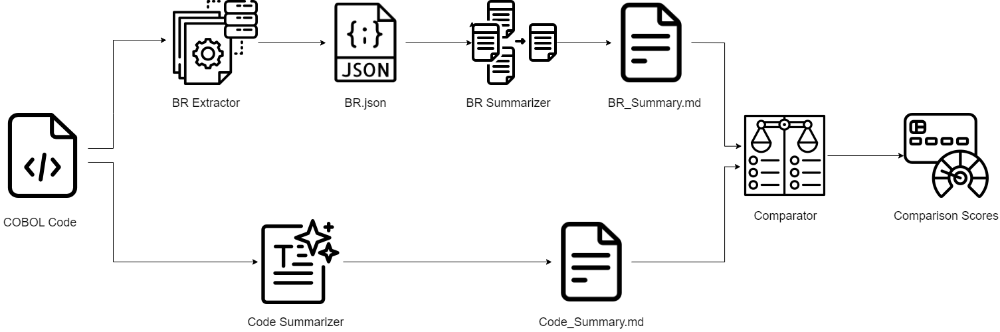

COBOL RuleForge: Extracting Clarity from Complexity
Tool Description
COBOL RuleForge, a tool designed to extract Business Rules from legacy COBOL codes and then summarize them. The tool is developed to help developers and practitioners to understand the business rules in the legacy COBOL code. The tool is developed using the Python programming. It uses few-shot prompting with Google's Gemini-Pro model to extract the business rules and then summarize them in a markdown file.
Installation
Requirements
Hardware and Operating System:
- Windows 8/10/11, macOS 12+, or Linux (Ubuntu 20.04+)
- Processor: Intel Pentuim, Core i5/i7/i9 or Ultra, AMD Ryzen 5 or better
- RAM: Minimum of 8GB required if the evaluation notebooks are to be run locally
- Storage: 25 MB
Software:
- Python version 3.11 +
- Jupyter version 1.0.0, if you're planning to run the evaluation notebooks
- google-generativeai version 0.4.0
- streamlit version 1.38.0 for GUI frontend
- rouge-score version 0.1.2 for evaluation scoring
- evaluate version 0.4.1
- glob2
Running the project
CLI Usage:
STEP1: Clone or download this github repository:
git clone https://github.com/Chiranjeevi2001/cobol-ruleforge.git
STEP2: Navigate into the ../cobol-ruleforge/Test_COBOLs/InputFiles directory
cd ./cobol-ruleforge/Test_COBOLs/InputFiles
pwd
We have provided a few COBOL files here for testing. You can add additional files here along with them.
Navigate back to ./cobol-ruleforge/src folder
cd ../../src
STEP3: Get the Gemini-Pro API key from Google AI Studio, and paste it in the given space in all of the summarization scripts.
STEP4: Run the preprocess.py file to preprocess the input COBOL files
python preprocess.py
STEP5: Navigate back to the ./cobol-ruleforge folder, and provide execute access to Summarize.sh file
chmod +x Summarize.sh
STEP6: Execute Summarize.sh
./Summarize.sh
STEP7: The Business Rules summary output will be generated in the ./Test_COBOLs/Output_BR_Summary directory, ant the Code summary output will be generated in the ./Test_COBOLs/Output_Code_Summary directory
GUI Usage:
STEP1: Clone or download this github repository
git clone https://github.com/Chiranjeevi2001/cobol-ruleforge.git
STEP2: Navigate to the ./cobol-ruleforge/UI directory
cd ./cobol-ruleforge/UI
STEP3: Run the following command to open the GUI screen on your web browser
streamlit run BR_extractor_ui.py --server.enableXsrfProtection false
You should be able to see the GUI in your browser
STEP4: Follow the steps in the screen to get the Business Rules summary.
Approach diagram
COBOL RuleForge uses Google's Gemini-Pro model to extract Business Rules from COBOL files and summarize them. To understand the need of extracting business rules, the summaries generated from business rules are compared against traditional code summaries generated by the model. The model is trained on the COBOL dataset and the summaries are generated using the few-shot prompting technique. The design of COBOL RuleForge is shown below:
Usage snippet screenshot (GUI)


Goal
Results
Demo Video
Contributors
Chiranjeevi B S, Sridhar Chimalakonda